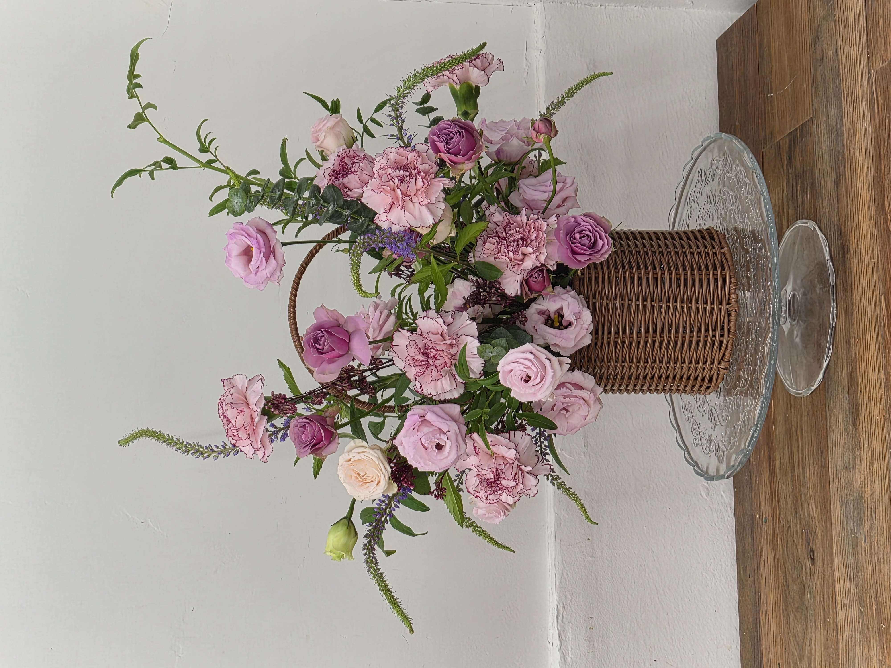
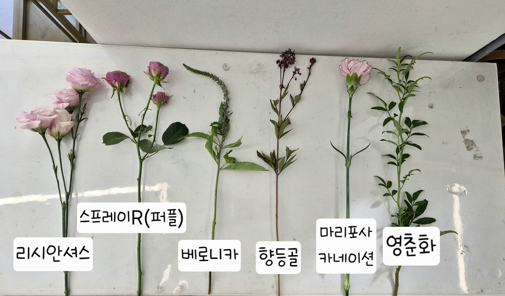
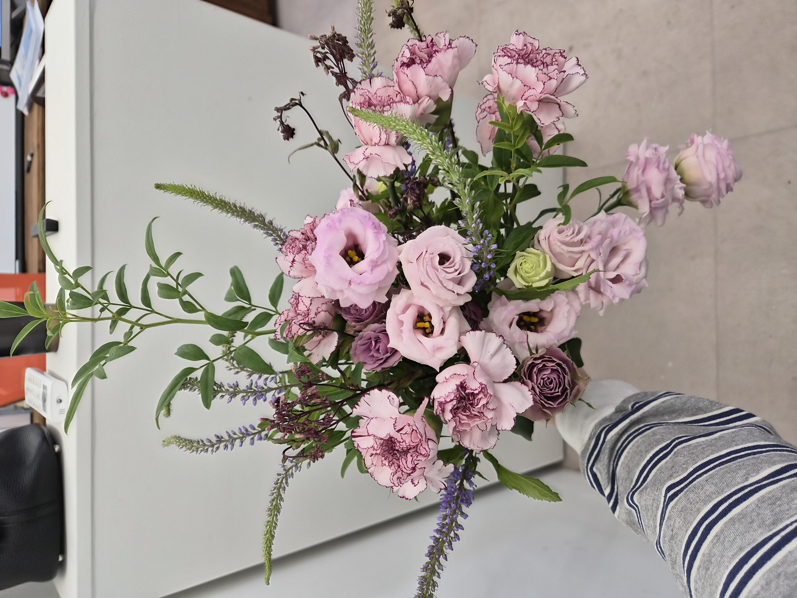
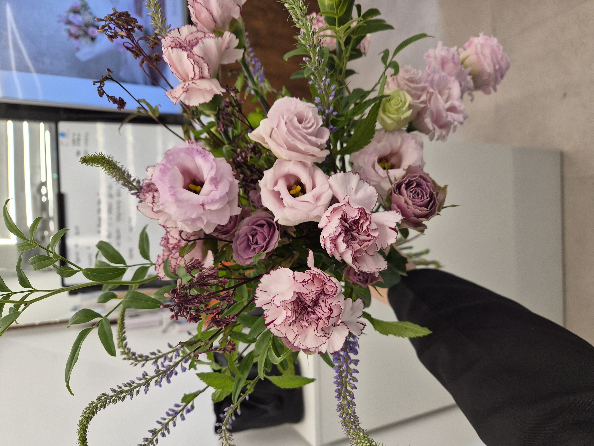
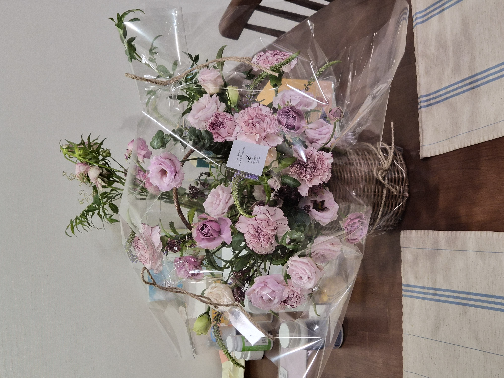
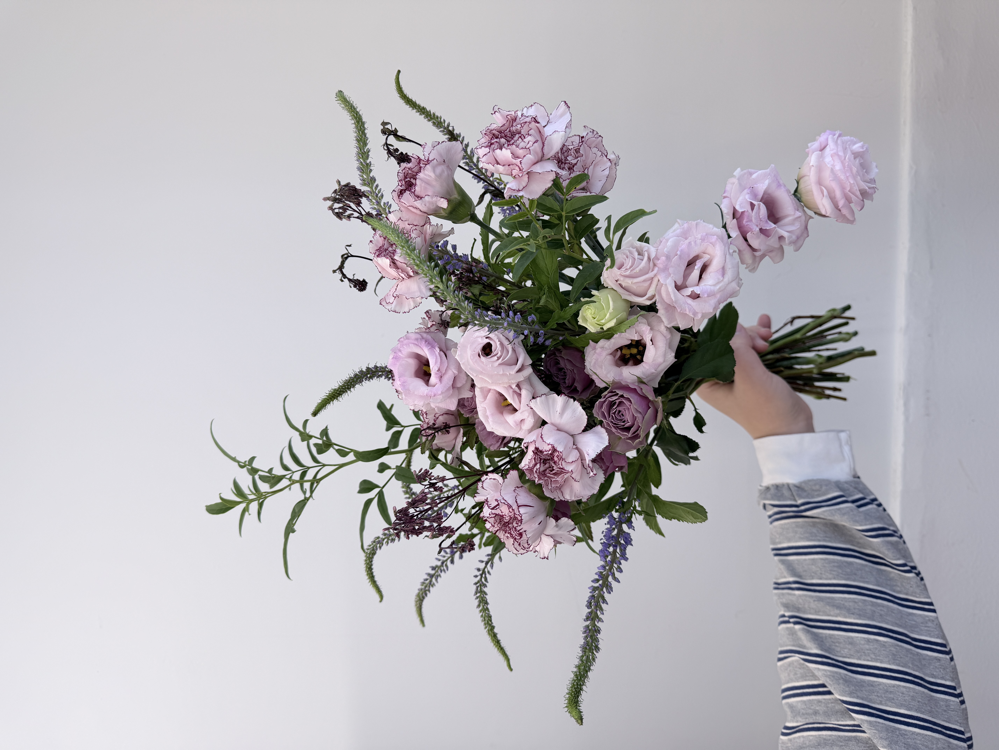
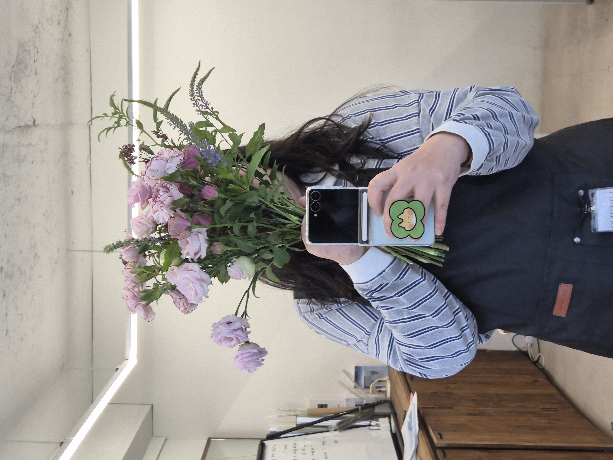

CLASS WORK · BASIC PRODUCTS
2026.10.10ROUND
BOUQUET
& BASKET
ラウンドブーケとバスケット
01 / BASIC PRODUCTS
CONCEPT
One palette,
two floral forms.
기초상품제작반 첫 수업에서는 같은 핑크·퍼플 계열 소재를 활용해 라운드 꽃다발과 라운드 바스켓을 각각 제작했습니다. 부드러운 색의 연결을 유지하면서도 두 상품의 형태와 표현 방식이 어떻게 달라지는지 살펴본 작업입니다.
리시안셔스와 스프레이장미, 카네이션의 꽃 얼굴을 중심으로 볼륨을 만들고, 베로니카와 영춘화의 선을 더해 단조롭지 않은 외곽을 구성했습니다. 꽃다발에서는 손으로 잡는 균형을, 바스켓에서는 플로랄폼에 꽂는 방향과 높낮이를 연습했습니다.
基礎商品制作コースの初回では、ピンクとパープルを基調にラウンドブーケとラウンドバスケットを制作しました。同じ花材を使いながら、手で束ねるブーケとフォームに挿すバスケット、それぞれの形とバランスの違いを学ぶ課題です。
COLOR PALETTE
色の構成
Blush Pink,
Dusty Mauve,
Fresh Green.
연한 핑크를 기본으로 라벤더와 모브 퍼플의 장미를 섞어 부드러운 명암 차이를 만들었습니다. 마리포사 카네이션의 진한 가장자리와 향등골의 짙은 색이 포인트가 되고, 그린 소재가 꽃 사이의 색을 자연스럽게 이어줍니다.
淡いピンクをベースに、ラベンダーやモーヴ系のバラを合わせました。カーネーションの濃い縁取りと深い色の小花をアクセントにし、グリーンで全体をつないでいます。
BLUSH PINK
#E9BECFPALE LAVENDER
#B79CBDDUSTY MAUVE
#90718DPLUM ACCENT
#6A485DFRESH GREEN
#677A5BMATERIALS
使用花材
리시안셔스·스프레이장미·카네이션으로 꽃의 볼륨을 만들고, 베로니카와 향등골로 가는 질감과 색의 깊이를 더했습니다. 영춘화의 가지는 전체 윤곽에 움직임을 주는 소재로 사용했습니다.
トルコキキョウ、スプレーバラ、カーネーションで花の量感をつくり、ベロニカやユーパトリウムで繊細な表情を加えました。オウバイの枝で外側への動きを出しています。
리시안셔스
トルコキキョウ
스프레이장미 (퍼플)
スプレーバラ（パープル）
마리포사 카네이션
カーネーション（マリポサ）
베로니카
ベロニカ
향등골
ユーパトリウム
영춘화
オウバイ
Blush Pink · Mauve
Plum · Fresh Green
淡いピンクとモーヴを中心に、深い紫とグリーンで引き締める。

COMPOSITION
構成とバランス
TWO FORMS,
ONE PALETTE,
NEW BALANCE.
라운드 꽃다발은 손으로 쥔 바인딩 지점을 중심으로 꽃의 높낮이와 얼굴 방향을 확인하며 전체 볼륨을 잡는 방식으로 접근했습니다. 리시안셔스가 아래로 흐르는 부분과 베로니카의 가는 선이 형태에 변화를 줍니다.
라운드 바스켓에서는 라탄 손잡이 아래에 꽃의 매스를 배치하고, 리시안셔스·장미·카네이션을 서로 다른 높이로 분산했습니다. 그린과 베로니카의 선을 바깥으로 뻗게 하여 정적인 반구형보다 자연스러운 흐름을 남겼습니다.
두 결과물 모두 부드러운 핑크 계열을 중심으로 하지만, 꽃다발은 묶는 지점을 기준으로, 바스켓은 플로랄폼의 꽂는 위치를 기준으로 균형을 만들어야 한다는 차이에 집중했습니다.
ブーケでは束ねる位置を中心に、花の高さと向きを確認しながら丸みをつくりました。バスケットでは持ち手の内側に花の量感を配置し、フォームへの挿し方と枝の伸びる方向を意識しています。同じ花材でも、固定方法によってバランスの取り方が変わることを確かめた制作です。


FINAL VIEW
完成したかたち
01 / ROUND BASKET ARRANGEMENT

꽃의 부드러운 볼륨과 바깥으로 뻗는 그린 라인을 함께 살린 라탄 바스켓. 투명 포장으로 전체 실루엣이 보이도록 마무리했습니다.
花の柔らかな量感に枝葉の伸びやかなラインを添えたバスケット。透明なラッピングで全体のシルエットを見せています。
02 / ROUND HAND-TIED BOUQUET


같은 소재를 손으로 묶어 제작한 꽃다발. 꽃의 정면과 옆선을 확인하며 높낮이와 볼륨의 차이를 기록했습니다.
同じ花材を手で束ねたブーケ。花の向きや横から見た輪郭を確認しながら、高低差と量感を記録しました。
REFLECTION
制作を振り返って
SAME FLOWERS,
DIFFERENT
STRUCTURES.
같은 수업에서 라운드 꽃다발과 바스켓을 연이어 제작하며, 비슷한 꽃과 색을 사용해도 고정 방식에 따라 구성의 출발점이 달라진다는 점을 배웠습니다. 꽃다발에서는 바인딩 지점을 중심으로 꽃의 위치를 조정했고, 바스켓에서는 플로랄폼에 꽂는 위치와 각도를 비교할 수 있었습니다.
사진으로 다시 살펴보면 선 소재가 길게 뻗는 만큼 꽃의 중심 볼륨과 외곽선의 균형을 더 세밀하게 정리할 여지가 있습니다. 다음에는 정면뿐 아니라 옆면과 뒷면에서도 형태가 자연스럽게 이어지는지 확인하며 제작하고 싶습니다.
同じ花材でブーケとバスケットを制作し、束ねる位置とフォームに挿す位置によって、形のつくり方が変わることを学びました。次回は花の中心の量感と外側に伸びる枝のバランスをさらに丁寧に確認し、正面だけでなく側面からも自然に見える仕上がりを目指したいです。
라운드 형태의 중심 볼륨을 안정적으로 잡고, 선 소재의 방향과 전체 실루엣을 여러 각도에서 점검하기.